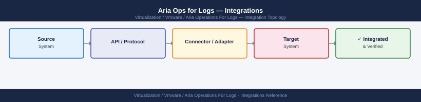

Aria Ops for Logs — Integrations¶

Integration with Aria Operations (vROps)¶
Aria Operations for Logs integrates bi-directionally with Aria Operations:
- Log Insight → Aria Operations: alerts triggered by log patterns can launch correlated views in Aria Operations, showing which objects are affected
- Aria Operations → Log Insight: clicking "View Logs" from an Aria Operations alert opens a pre-filtered Aria Ops for Logs search scoped to the affected object and time window
Configure the integration:
In Aria Operations for Logs UI:
Configure ESXi syslog via esxcli (single host):
esxcli system syslog config set --loghost="udp://vrli-prod-01.example.local:514"
esxcli system syslog reload
esxcli system syslog config get
(no output — command completes silently)
(no output — command completes silently)
Hostname: vrli-prod-01.example.local
Port: 514
Protocol: udp
LogLevel: info
LogToFile: true
DefaultRotate: 10
DefaultSize: 1024
Common errors
Error: Unable to resolve hostname vrli-prod-01.example.local — Verify the FQDN is correct and that DNS resolution is working on the ESXi host with nslookup vrli-prod-01.example.local.
Error: Connection refused to 192.168.1.50:514 — Ensure the vRealize Log Insight server is running and listening on UDP port 514 with netstat -tuln | grep 514 on the VRLI host.
Error: This command requires root privileges — Run the esxcli commands as root or with appropriate sudo permissions on the ESXi host.
NSX-T Syslog Integration¶
Forward NSX Manager and Edge node syslog to Aria Ops for Logs:
# Via NSX-T API — add syslog exporter on NSX Manager
curl -sk -u 'admin:<password>' -X POST \
"https://nsx-mgr-01.example.local/api/v1/node/services/syslog/exporters" \
-H "Content-Type: application/json" \
-d '{
"server": "vrli-prod-01.example.local",
"port": 514,
"protocol": "UDP",
"exporter_name": "aria-ops-for-logs",
"level": "INFO",
"facility": "USER"
}'
{
"exporter_id": "exporter-1a2b3c4d-5e6f-7g8h-9i0j-1k2l3m4n5o6p",
"server": "vrli-prod-01.example.local",
"port": 514,
"protocol": "UDP",
"exporter_name": "aria-ops-for-logs",
"level": "INFO",
"facility": "USER",
"status": "ACTIVE",
"created_time": 1704067200000,
"_links": {
"self": {
"href": "/api/v1/node/services/syslog/exporters/exporter-1a2b3c4d-5e6f-7g8h-9i0j-1k2l3m4n5o6p"
}
}
}
Common errors
curl: (60) SSL certificate problem: self signed certificate — Add -k flag to skip certificate verification (already present in example, but verify NSX Manager certificate is trusted if removing -k).
{"httpStatus":401,"error_code":"UNAUTHENTICATED","module_name":"common-services","error_message":"The credentials were invalid"} — Verify the NSX Manager admin password is correct and URL-encode special characters in the password.
{"httpStatus":400,"error_code":"INVALID_REQUEST","error_message":"Invalid facility value"} — Use valid syslog facility values (USER, LOCAL0–LOCAL7, DAEMON, etc.) and verify JSON syntax is valid.
For NSX Edge nodes, apply the syslog configuration via a transport node profile or per-edge configuration in NSX-T Manager UI:
Linux Log Forwarding Agent¶
Install the Aria Operations for Logs Agent (formerly vRealize Log Insight Agent) on Linux VMs for structured log collection:
# Download agent from Aria Ops for Logs UI: Administration → Agents → Agent Downloads
# Transfer to target and install
chmod +x VMware-Log-Insight-Agent-*.bin
sudo ./VMware-Log-Insight-Agent-*.bin
# Configure agent — edit /var/lib/loginsight-agent/liagent.ini
[server]
hostname=vrli-prod-01.example.local
port=9543
proto=cfapi
ssl=yes
[storage]
max_disk_mb=200
# Restart agent service
sudo systemctl restart liagentd
sudo systemctl enable liagentd
# Verify connectivity
sudo /usr/lib/loginsight-agent/bin/liagent-binary verify
Installing VMware Log Insight Agent 8.14.0 (build 21567890)...
Extracting files to /var/lib/loginsight-agent/
Creating system user 'liagent'...
Installation completed successfully.
Configuration file updated: /var/lib/loginsight-agent/liagent.ini
Restarting liagentd service...
liagentd.service restarted successfully.
liagentd.service enabled for auto-start.
Verifying agent connectivity...
Agent version: 8.14.0-21567890
Connected to: vrli-prod-01.example.local:9543 (cfapi/ssl)
Status: CONNECTED
Last heartbeat: 2024-01-15T14:32:18Z
Disk usage: 45 MB / 200 MB max
Verification completed successfully.
Common errors
./VMware-Log-Insight-Agent-*.bin: Permission denied — Run chmod +x VMware-Log-Insight-Agent-*.bin before executing the installer.
[server] hostname=vrli-prod-01.example.local: Name or service not known — Verify the VRLI hostname is resolvable by running nslookup vrli-prod-01.example.local and update /var/lib/loginsight-agent/liagent.ini with the correct IP or FQDN.
liagentd.service: Unit not found. — Ensure the agent installation completed without errors and check /var/log/loginsight-agent/liagent.log for installation failures.
Windows Log Forwarding Agent¶
# Install the agent (MSI)
msiexec /i "VMware-Log-Insight-Agent-*.msi" /quiet SERVERHOST=vrli-prod-01.example.local `
SERVERPORT=9543 SERVERPROTOCOL=cfapi
# Verify agent service is running
Get-Service -Name "VMware Log Insight Agent"
# Configuration file location on Windows
# C:\ProgramData\VMware\Log Insight Agent\liagent.ini
SNMP Trap Receiver¶
Aria Ops for Logs can receive SNMP traps from network devices (switches, firewalls):
- Port: 162 (UDP)
- Version: SNMPv2c or SNMPv3
- Community string or credentials
Configure network devices to forward traps to vrli-prod-01.example.local:162.
Generic Syslog (TCP/UDP)¶
Any RFC 5424 or RFC 3164 compliant syslog source can forward to Aria Ops for Logs:
| Protocol | Port | Use Case |
|---|---|---|
| UDP syslog | 514 | Legacy devices, ESXi hosts |
| TCP syslog | 1514 | Reliable delivery, Linux agents |
| cfapi (TLS) | 9543 | LI Agent protocol — encrypted and structured |
| cfapi (no TLS) | 9000 | LI Agent — unencrypted (lab only) |
Ensure firewall permits inbound traffic to Aria Ops for Logs on these ports from the syslog sources.
Webhook / REST API for External Alerting¶
Aria Ops for Logs alert notifications can POST JSON payloads to external systems (ServiceNow, Slack, PagerDuty):
Provide:
- Webhook URL (e.g., https://hooks.slack.com/services/...)
- Authentication headers if required
- Test with a sample payload
Alternatively, use the REST API to query recent alerts for external integration:
# Get recent critical alerts
curl -sk -u 'admin:<password>' \
"https://vrli-prod-01.example.local/api/v2/alerts?severity=critical&limit=20" | \
jq '.alerts[] | {name: .name, status: .status, timestamp: .timestamp}'
{
"name": "vSAN Disk Group Degraded",
"status": "active",
"timestamp": "2024-01-15T14:32:18.000Z"
}
{
"name": "ESXi Host Memory Pressure",
"status": "active",
"timestamp": "2024-01-15T13:47:52.000Z"
}
{
"name": "Log Storage Capacity Warning",
"status": "acknowledged",
"timestamp": "2024-01-15T12:15:33.000Z"
}
{
"name": "Cluster Network Latency Spike",
"status": "active",
"timestamp": "2024-01-15T11:28:09.000Z"
}
{
"name": "Database Connection Pool Exhausted",
"status": "resolved",
"timestamp": "2024-01-15T10:05:41.000Z"
}
Common errors
curl: (60) SSL certificate problem: self signed certificate — Add the -k flag (already present) or import the CA certificate into your system's trust store with update-ca-certificates.
jq: parse error: Cannot index string with string "name" — Verify the API response structure matches your jq filter by running curl -sk -u 'admin:<password>' "https://vrli-prod-01.example.local/api/v2/alerts?severity=critical&limit=1" | jq '.' to inspect the raw JSON.
curl: (401) Unauthorized — Confirm the admin credentials are correct and the user has API access permissions in Aria Operations for Logs.